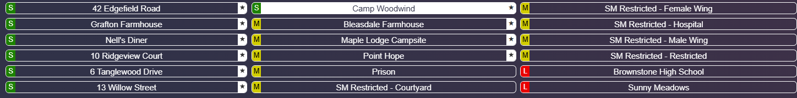

Map Board
Maps & Routen
Schneller Überblick über Größenklasse, Ebenen, Lichtlimit und Kartenstil. Die Vorschau lässt sich direkt groß öffnen, damit du im Match schnell zwischen Übersicht und Floorplan wechseln kannst.
S
Klein • 9 Lichter
M
Mittel • 8 Lichter
L
Groß • 7 Lichter
